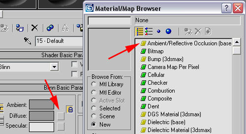
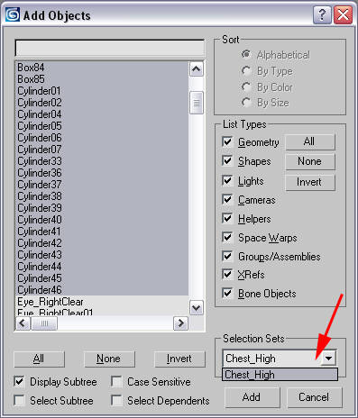
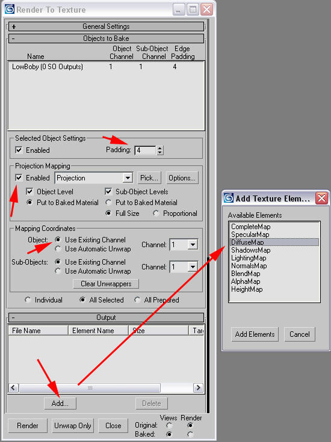
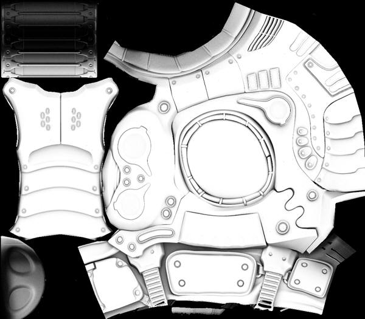

UDN
Search public documentation:
CreatingShadeMapsCH
English Translation
日本語訳
한국어
Interested in the Unreal Engine?
Visit the Unreal Technology site.
Looking for jobs and company info?
Check out the Epic games site.
Questions about support via UDN?
Contact the UDN Staff
日本語訳
한국어
Interested in the Unreal Engine?
Visit the Unreal Technology site.
Looking for jobs and company info?
Check out the Epic games site.
Questions about support via UDN?
Contact the UDN Staff
创建阴影贴图的技术指南
概述
过程
步骤 1
首先，你需要指定 MentalRay 作为您的 Renderer(渲染器)。 打开您的渲染器设置，跳转到常用 (Common) 标签，然后打开分配渲染器 (Assign Renderer) 标签。点击...按钮，然后选择 Mental Ray。
步骤 2
现在，点击处理 (Processing)标签，然后启用材质覆盖 (Material Overide)。点击并拖拽材质 (Material) 到材质编辑器 (Material Editor) 中，制作一个它的实例。
步骤 3
现在，点击漫反射 (Diffuse) 标签，并选择环境/反射 遮挡 (Ambient/Reflective Occlusion)。
步骤 4
这将会弹出 Ambient Occlusion shader 的设置。 您可以根据您想获得的阴影贴图的光滑度来改变样本的数量，从16到25到50。数值越高需要的时间越长。 现在，我们需要告诉它在计算时排除低多边形模型，否则无论低多边形是否从高多边形物体中突出来，它都会在高多边形物体上投射一个阴影。(您可以尝试设置低多边形不投射阴影，但是它似乎没有作用)。我们需要将低多边形的 ID 设置为 Incl./Excl. Object ID(包含的/排除的 物体的ID)。负值将会使它被排除，所以设置它为-30。
步骤 5
点向上的箭头来跳转到材质树的顶部。 然后设置自发光 (Self-Illumination) 值为 100。
步骤 6
现在我们需要设置低多边形 (LowPoly) 的物体ID (Object ID) 为我们在环境遮挡 (Ambient Occlusion) 着色器中设置的排除物体的 ID，也就是 30。 我们可以通过右击低多边形 (LowPoly) 模型并找到它的属性。在 G-Buffer 下，设置物体通道 (Object Channel) 为 30。
步骤 7
现在我们需要为 Render to Texture 的过程来设立场景。 选择低多边形模型，并应用一个发射修改器。 在几何体选项 (Geometry Selection)下，点击选择列表 (Pick List) 来选择您的高多边形模型。
步骤 8
您可以制作一个我的高模选项集合，因为它使添加它们到 Projection Modifier 变得更加容易。所以，在选项集合 (Selection Set) 下，选择您的高多边形 (HighPoly) 集合,在这个例子中是指 Chest_High。
步骤 9
当添加高模 (HighPoly Models) 后，鸟笼式的轮廓变得混乱。 您可以通过点击在 Cage 设置下的其他按钮来修复这个问题。 现在您可以使用 Push 值来查看您所需要的追踪距离。您不是必须使用 cage，也可以仅在渲染贴图选项中手动地设置追踪距离的值，这样您将会获得和 SHTools 或最新版本的 3D Studio Max 类似的结果。
步骤 10
点击0(零)键来获得 Render To Texture 工具。 点击投影映射 (Projection Mapping) 下的启用 (Enable) 选项。 设置填充 (Padding) 大约为 4。 确保勾选了 Existion Mapping。 点击输出 (Output) 下的添加 (Add)，然后选择漫反射贴图 (DiffuseMap)。
步骤 11
如果您想使它像 SHTools 或较新的 3D Studio Max 那样工作，请点击选项 (Options) 按钮，并取消勾选使用 Cage (Use Cage)。否则它将使用 Projection Cage 的 Push 距离。偏移量 (Offset) 是您想要的追踪距离。
步骤 12
如果您愿意，您可以改变输出路径及文件名称。 设置分辨率 (Resolution)。 请确保勾选了阴影 (Shadows) 项，否则您得到的图片是白色的。
步骤 13
按下神奇的渲染 (Render) 按钮。
步骤 14
最终的阴影贴图，完美的贴图制作过程。;) 享用吧！